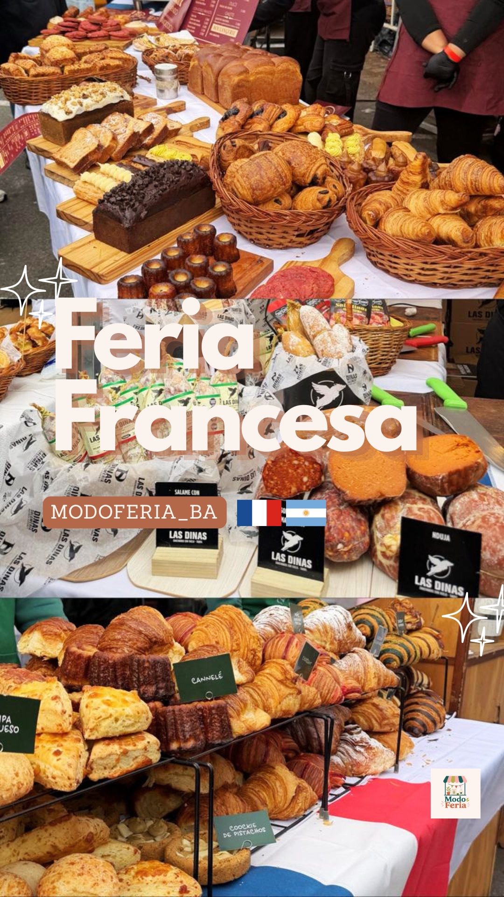
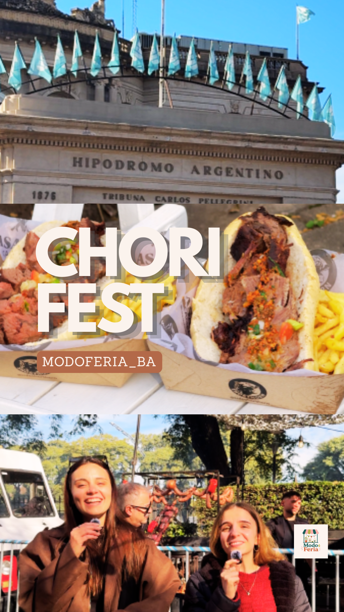
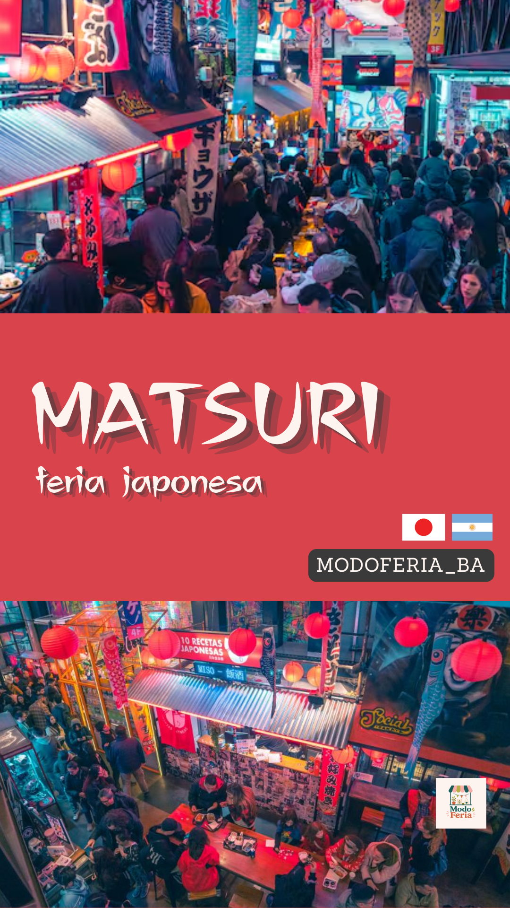
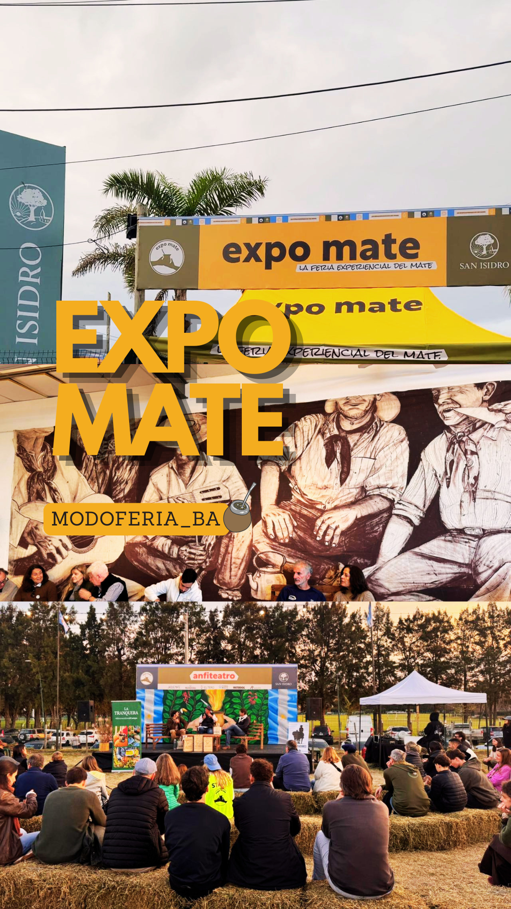

Periodista. Editora. Creadora de contenidos digitales sobre cultura, gastronomía y ferias en Buenos Aires.
Co-fundadora y editora de Modo Feria BA, un medio digital nativo sobre ferias, eventos culturales y emprendimientos en la Ciudad de Buenos Aires, desarrollado en el marco de Periodismo II (UADE).
Participé en la dirección y producción editorial del proyecto: definición de líneas editoriales, cobertura de diferentes ferias, creación y edición de contenido y desarrollo del sitio web.
Crónicas, entrevistas y notas publicadas entre mayo y junio de 2026.
21+ eventos cubiertos en Buenos Aires, calendario interactivo mayo–noviembre.
42+ puntos de intercambio de figuritas del Mundial 2026 en todo el país.
Reels y TikToks en @modoferia_ba con cobertura en campo de cada evento.
Produje y publiqué dos piezas periodísticas de autoría propia en el sitio, aplicando géneros del periodismo digital contemporáneo.
Crónica de campo con entrevistas y cobertura exclusiva.
Crónica · 25 de Mayo 2026Nota con datos duros, fuentes citadas y mapa interactivo propio.
Periodismo de datos · Junio 2026Cobertura de campo el 25 de Mayo. Crónica narrativa con entrevistas, ambiente, chacarera y clima mundialista.
Diseñé las portadas de algunas de las coberturas para Instagram y TikTok de los eventos cubiertos por Modo Feria BA, con identidad visual consistente y branding de la marca.




Produje y edité contenido en video en cobertura de campo, aplicando la metodología de periodismo móvil (MOJO): captura con smartphone, edición mobile-first y publicación en @modoferia_ba.
Diseñé y desarrollé el sitio web completo de Modo Feria BA utilizando HTML, CSS y JavaScript desde cero, en colaboración con Claude (Anthropic).
El sitio está publicado en producción con dominio propio, hospedado en Cloudflare Pages y con repositorio en GitHub.
Crónica · Edición · Diseño · Video · Desarrollo web.
Un portfolio construido desde las ferias de Buenos Aires.